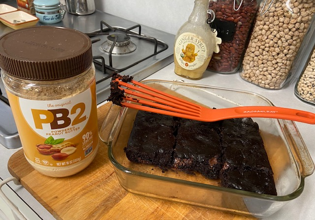

PB2 Chocolate Brownies
Thinking about alternatives to my (limited) flour as we go shopping less during the pandemic, I recalled that I have two big jars of PB2 (powdered peanut butter) that have been in my cupboard for awhile. Googling brought up several lists of healthy PB2 recipes including some PB2 Flourless Chocolate Brownies. I played with the recipe and made a few changes. In particular, it worked best for me with half PB2 and half flour, sugar in place of honey, and fewer chocolate chips. (And of course flaxmeal in place of eggs!). It’s really yummy and not too sweet!

Ingredients
Dry
- 1/2 C powdered peanut butter
- 1/2 C flour
- 1/2 cup cocoa powder
- 1 tsp baking soda
- 1/4 tsp salt
Wet
- 1 flax egg (1 T flaxmeal, 3 T water)
- 1/3 cup sugar
- 1 C plus 1T water
- 1 tsp vanilla
- 1/3 to 1/2 C chocolate chips (1/4 cup is too little, I found!)
Instructions
Preheat oven to 325 degrees. Grease a 8x8 or 9x9 pan with vegan butter.
Make flax egg (mix flaxmeal and water) and set aside. In a large bowl, mix together the dry ingredients. Use fingers to break up any clumps. Stir wet ingredients together and then add to the dry mix. Fold in chocolate chips.
Pour mixture into prepared pan and bake for 30 minutes. Set aside to cool, and then cut into bars. Yum!

2022 update: These have been the best pandemic recipe yet: Easy, delicious, low/no fat, and high protein. Munira loves them, so she got them for her birthday!
{kind=link}